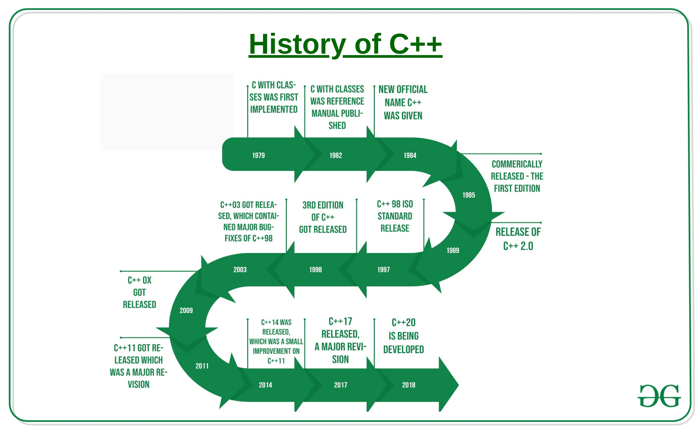

C++
What is C++ Programming Language?
C++ is a general-purpose programming language that was developed as an enhancement of the C language to
include object-oriented paradigm. It is an imperative, object-oriented , generic programming features, and a
compiled language.C++ runs on lots of platforms like Windows, Linux, Unix, Mac etc.

C++ is a middle-level language rendering it the advantage of programming low-level (drivers, kernels) and
even higher-level applications (games, GUI, desktop apps etc.). The basic syntax and code structure of both
C and C++ are the same.
C++ is a cross-platform language that can be used to create high-performance applications. C++ was developed
by Bjarne Stroustrup, as an extension to the C language. C++ gives programmers a high level of control over
system resources and memory.
History of C++?
The C++ language is an object-oriented programming language & is a combination of both
low-level & high-level language – a Middle-Level Language. The programming language was created, designed &
developed by a Danish Computer Scientist – Bjarne Stroustrup at Bell Telephone Laboratories (now known as
Nokia Bell Labs) in Murray Hill, New Jersey. As he wanted a flexible & a dynamic language which was similar
to C with all its features, but with additionality of active type checking, basic inheritance, default
functioning argument, classes, inlining, etc. and hence C with Classes (C++) was launched.
C++ was initially known as “C with classes, ” and was renamed C++ in 1983. ++ is shorthand for adding one to
variety in programming; therefore C++ roughly means that “one higher than C.”

The trace of the programming language C++ can be done back to 1979 when Bjarne Stroustrup was doing some
development for this thesis for PhD. One in all the words Stroustrup had the chance to figure with, was a
language referred to as Simula, that because the name implies, could be a language primarily designed for
simulations. The Simula sixty-seven language – that was the variant that Stroustrup worked with is
considered the primary language to support the object-oriented programming paradigm. Stroustrup found that
this paradigm was helpful for package development; but, the Simula language was way too slow for practice &
practical use.
Shortly subsequently, he began work on “C with Classes“, because what the name implies was meant to be a
superset of the C language. His main dream was to get his advanced object-oriented programming, created by
him, into the C language, which was during his era was still the programming language that was widely
respected for its movability, portability & compactness, by not sacrificing the speed or the low-level
practicality. His programming language enclosed inlining, basic inheritance, default function arguments,
categories, and reliable sort was checking additionally to all or any the options of the C language.
The first C with categories compiler was referred to as Cfront, that got derived from a C compiler referred
to as CPre. It had been a program designed to translate C with categories code to universal C. A rather
attention-grabbing purpose value noting is that Cfront was written mostly in C with classes, creating it a
self-hosting compiler (a compiler which will compile itself). Cfront would later be abandoned in 1993 when
it became troublesome to integrate new options into it, mainly C++ exceptions. Even so, Cfront created a
significant impact on the implementations of future compilers and also the operating system UNIX.
In 1983, the name of the language got modified from C with categories to C++. The ++ operator within the C
language is the associate operator for incrementing a variable, which provides some insight into however
Stroustrup regarded the programming language. Several new options got additional around this point, the
foremost notable of that area unit virtual functions, perform overloading, references with the const
keyword, and single-line comments by using the two forward slashes (which may be a feature taken from the
language BCPL).
In 1985, Stroustrup’s relation to the language entitled The C++ programming language was printed and got
released. That very same year, C++ got enforced as an advertisement product and hence starting of it as a
commercial element. The programming language wasn’t formally standardized, nevertheless creating the book an
essential reference. The programming language was updated once more in 1989 to incorporate protected and
static members, still as an associate inheritance from many categories & classes.
In 1990, The Annotated C++ manual, which was a reference got released all over. In 1990 only, in the same &
identical year, Borland’s Turbo C++ compiler would also be commercially discharged as an advertisement
product. Turbo C++ additional an excessiveness of other libraries which might have a substantial impact on
C++’s development. Though Turbo C++’s last stable unharness was in 2006, the compiler continues to get
widely used.
In 1998, the C++ customary advisory & standards committee printed the first international standard for C++
ISO/IEC 14882:1998, which might be informally called C++98. The Annotated C++ manual was aforementioned to
be a significant influence within the development of the quality. The quality template library (also known
as the Standard Template Library) that began its intellectual construction in 1979 got additionally enclosed
in it. In 2003, the committee well-versed multiple issues that were according with their 1998 customary and
revised it consequently. The modified language got dubbed as C++03.
In 2005, the same committee of C++ discharged a technical report (called as TR1) particularization varied
options they were aiming to boost the newest C++ standard. The new rule was informally dubbed C++0x because
it was expected to be discharged someday before the tip of the first decade. Ironically, however, the new
customary wasn’t fulfilled until mid-2011. Many technical reports were discharged up till then, and a few
compilers began adding experimental support for the new options and features.
In mid-2011, the new C++ customary (dubbed C++11) got finished. The Boost library project created a
substantial impact on the new rule, and a few of the new modules were derived directly from the
corresponding Boost libraries. A number of the new options that got included were:
1) New for loop syntax providing practicality just like foreach loops in specific different languages
2)Customary threading library (which up till 2011 each C and C++ were lacking)
3_Variadic templates
4)Automotive vehicle (AUTO) keyword
5)New instrumentation categories & classes
6)New C++ time library, atomics support
7)Comprehensive organization library
8)Regular expression support
9)Higher support for unions and array-initialization lists
C++20 is the latest version of C++. A newer & advanced version of C++ is being released, i.e. C++23.
C++ is still the third most popular programming language according to the TIOBE Index’s latest study of
2019, behind Java & C, by knocking out Python. All credits for this go to the newly released C++11 version,
which according to the users made it much robust, safer, easier simpler, and more expressive.
Bjarne Stroustrup has created excellent work with C++. C could be a low-level programming language, and so,
it does not have any classes. It does not contain several options which will create programming more
well-off, however, is that the quickest language (assembly is more rapid; however, programming in
construction isn’t one thing you’d consider), what Bjarne Stroustrup did he additional the thing orientated
half, by treating code like life objects. What makes C++ therefore lovely is that it’s the speed of C and
it’s additionally a high-level programming language, therefore allow us to say the most effective of each
world. However on the opposite hand, C++ is challenging to be noted to newbies, and for an equivalent code
that you wrote on C++, you’ll be able to write in Python for the quarter of the time.
Applications of C++ Programming
As mentioned before, C++ is one of the most widely used programming languages. It has it's presence in
almost every area of software development. I'm going to list few of them here:
Application Software Development - C++ programming has been used in developing almost all the major
Operating Systems like Windows, Mac OSX and Linux. Apart from the operating systems, the core part of many
browsers like Mozilla Firefox and Chrome have been written using C++. C++ also has been used in developing
the most popular database system called MySQL.
Programming Languages Development - C++ has been used extensively in developing new programming languages
like C#, Java, JavaScript, Perl, UNIX’s C Shell, PHP and Python, and Verilog etc.
Computation Programming - C++ is the best friends of scientists because of fast speed and computational
efficiencies.
Games Development - C++ is extremely fast which allows programmers to do procedural programming for CPU
intensive functions and provides greater control over hardware, because of which it has been widely used in
development of gaming engines.
Embedded System - C++ is being heavily used in developing Medical and Engineering Applications like
softwares for MRI machines, high-end CAD/CAM systems etc.
What is the C++ language used for?
C++ (or “C-plus-plus”) is a general-purpose programming and coding language. C++ is
used in developing browsers, operating systems, and applications, as well as in-game programming, software
engineering, data structures, etc.
What are advantages of C++?
• Portability. C++ offers the feature of portability or platform independence which allows the user to run the
• same program on different operating systems or interfaces at ease. ...
• Object-oriented. ...
• Multi-paradigm. ...
• Low-level Manipulation. ...
•Memory Management. ...
•Large Community Support. ...
•Compatibility with C. ...
• Scalability.
Some interesting facts about C++:
Here are some awesome facts about C++ that may interest you:
• The name of C++ signifies the evolutionary nature of the changes from C. “++” is the C increment
operator.
• C++ is one of the predominant languages for the development of all kind of technical and commercial
software.
• C++ introduces Object-Oriented Programming, not present in C. Like other things, C++ supports the four
primary features of OOP: encapsulation, polymorphism, abstraction, and inheritance.
• C++ got the OOP features from Simula67 Programming language.
• A function is a minimum requirement for a C++ program to run.(at least main() function)
Some of the features & key-points to note about the programming language are as follows:
• Simple: is a simple language in the sense that programs can be broken down into logical units and parts,
has a rich library support and a variety of data-types.
• Machine Independent but Platform Dependent: A C++ executable is not platform-independent (compiled programs
on Linux won’t run on Windows), however they are machine independent.
Mid-level language: It is a mid-level language as we can do both systems-programming (drivers, kernels,
networking etc.) and build large-scale user applications (Media Players, Photoshop, Game Engines etc.)
• Rich library support: Has a rich library support (Both standard ~ built-in data structures, algorithms etc.)
as well 3rd party libraries (e.g. Boost libraries) for fast and rapid development.
• Speed of execution: C++ programs excel in execution speed. Since, it is a compiled language, and also hugely
procedural. Newer languages have extra in-built default features such as garbage-collection, dynamic typing
etc. which slow the execution of the program overall. Since there is no additional processing overhead like
this in C++, it is blazing fast.
• Pointer and direct Memory-Access: C++ provides pointer support which aids users to directly manipulate
storage address. This helps in doing low-level programming (where one might need to have explicit control on
the storage of variables).
• Object-Oriented: One of the strongest points of the language which sets it apart from C. Object-Oriented
support helps C++ to make maintainable and extensible programs. i.e. Large-scale applications can be built.
Procedural code becomes difficult to maintain as code-size grows.
Compiled Language: C++ is a compiled language, contributing to its speed.
Why to Learn C++
C++ is a MUST for students and working professionals to become a great Software Engineer. I will list down
some of the key advantages of learning C++:
C++ is very close to hardware, so you get a chance to work at a low level which gives you lot of control in
terms of memory management, better performance and finally a robust software development.
C++ programming gives you a clear understanding about Object Oriented Programming. You will understand low
level implementation of polymorphism when you will implement virtual tables and virtual table pointers, or
dynamic type identification.
C++ is one of the every green programming languages and loved by millions of software developers. If you are
a great C++ programmer then you will never sit without work and more importantly you will get highly paid
for your work.
C++ is the most widely used programming languages in application and system programming. So you can choose
your area of interest of software development.
C++ really teaches you the difference between compiler, linker and loader, different data types, storage
classes, variable types their scopes etc.
There are 1000s of good reasons to learn C++ Programming. But one thing for sure, to learn any programming
language, not only C++, you just need to code, and code and finally code until you become expert.